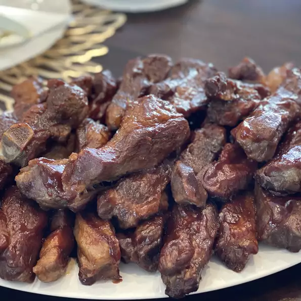

Simple BBQ Ribs

This recipe will tell you how to make perfect BBQ ribs without having to
use a grill. Five simple ingredients and you are on your way to
having some delicious BBQ Ribs.
Ingredients
- 2 1/2 pounds country-style pork ribs
- 2 tablespoons kosher salt
- 1 tablespoon garlic powder
- 1 teaspoon ground black pepper
- 1 cup barbeque sauce
Steps
- Place ribs in a large pot cover them with water. Stir in the kosher salt,
garlic powder, and pepper. Bring water to a boil over medium heat. Continue
the boil until ribs are tender. Roughly 40-45 minutes.
- Preheat the oven to 325F while the ribs are boiling.
- Remove the ribs from the pot and place them in a 9x13-inch baking dish.
Pour the barbeque sauce over the ribs. Cover with aluminum foil.
- Bake until the internal temperature of the pork is 160F. It should
take roughly 1 to 1 1/2 hours.